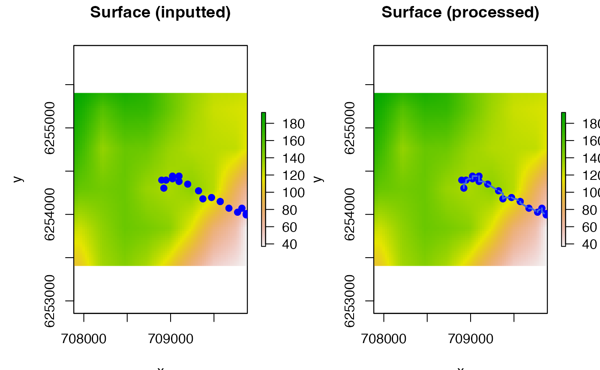

R/lcps.R
lcp_interp.RdThis function is a wrapper for lcp_over_surface designed to interpolate shortest (least-cost) paths between sequential locations along an animal movement path. The function is specifically motivated for the interpolation of paths between locations for benthic animals, whose movement is restricted by the seabed (see lcp_over_surface).
lcp_interp( paths, surface, ..., keep_cols = FALSE, calc_distance = TRUE, verbose = TRUE )
| paths | A dataframe that defines movement paths. This must contain a unique, integer identifier for each path from 1 to the number of paths (`path_id'); an integer time step index (`timestep') and the coordinates of sequential locations (`cell_x' and `cell_y'). The example dataset comprising movement paths reconstructed over the seabed by the depth-contour particle filtering algorithm ( |
|---|---|
| surface | A |
| ... | Additional arguments, passed to |
| keep_cols | A logical input that defines whether or not to retain all columns in |
| calc_distance | A logical input that defines whether or not to calculate distances between sequential positions along the shortest paths (see Value). |
| verbose | A logical input that defines whether or not to print messages to the console to monitor function progress. |
The function returns a dataframe or a list depending on the input to calc_distance. If calc_distance = FALSE, the function returns a dataframe that defines, for each path (`path_id'), for each time step (`timestep'), a vector of the cell coordinates (`cell_x', `cell_y', `cell_z') on the surface that define the shortest path from the location at the previous time step to the location at the current time step. Thus, the first row contains the individual's initial location and subsequent rows for that time step (timestep = 2 if the first time step is defined as timestep = 1, since movement is considered from the location at the `previous' time step to the location at the `current' time step) include the sequential locations of an individual, were it to have moved along the shortest path, to the location at the next time step. If keep_cols = TRUE, coordinate columns are suffixed by `.x' and the coordinates for each time step (as inputted) are included (with the `.y' suffix) along with any other columns in the inputted dataframe (paths).
If calc_distance = TRUE, a named list is returned with two elements. The `path_lcp' element contains the dataframe of interpolated path coordinates, as described above, with an extra `dist' column that defines the distance over the surface between sequential positions along the path. The `dist_lcp' element contains a dataframe, exactly as inputted via paths, but with the total distance along each shortest path (from the `previous' location to the `current' location) included as a `dist' column (this is simply the sum of the distances provided in path_lcp$dist) for all movements within each timestep for each path.
If calc_distances = TRUE, distances are calculated with movement from the previous location to the `current' location (see Value).
A useful application of this function in flapper is the post-hoc evaluation of particle filtering movement algorithms (see pf). These can be implemented using movement models based on Euclidean or shortest distances. Since the former is typically much faster, a useful starting point is to implement the chosen algorithm using Euclidean distances and then, for the sample of paths reconstructed by the algorithm, use lcp_interp to examine the similarity between Euclidean and shortest distances and the effects of updated distance values on movement probabilities. If a Euclidean distances implementation of an algorithm is acceptable (i.e., minimum swimming distances are not too large under the movement model), shortest distances from lcp_interp can be used to adjust the movement probabilities to more realistic values. Alternatively, a shortest distances implementation of the movement path algorithm may be necessary.
This function can also be useful for visualising movement paths (e.g., via pf_plot_3d).
Edward Lavender
#### Define movement paths # We will interpolate LCPs between sequential locations # ... of a skate on the seabed # ... reconstructed by the DCPF algorithm (dc() & pf()), using the # ... example dat_dcpf_* datasets. We extract the paths # ... and the surface over which movement occurred from this object: paths <- dat_dcpf_paths surface <- dat_dcpf_histories$args$bathy #### Example (1): Implement lcp_interp() for an example path # ... with calc_distance = FALSE # Implement approach paths_1 <- paths[paths$path_id == 1, ] paths_interp_1 <- lcp_interp(paths = paths_1, surface = surface, calc_distance = FALSE)#> flapper::lcp_interp() called (@ 2022-05-28 18:13:20)... #> ... Setting up function... #> ... Processing paths... #> ... Calculating least-cost paths via flapper::lcp_over_surface()... #> flapper::lcp_over_surface() called (@ 2022-05-28 18:13:20)... #> ... Checking user inputs...#> ... Defining cost matrix...#> Warning: transition function gives negative values#> ... Using method = 'cppRouting'... #> ... ... Defining nodes, edges and costs to make graph... #> ... ... Constructing graph object... #> ... ... Implementing bi algorithm to compute least-cost paths(s)...#>#> ... flapper::lcp_over_surface() call completed (@ 2022-05-28 18:13:21) after ~0 minutes. #> ... flapper::lcp_interp() call completed (@ 2022-05-28 18:13:21) after ~0 minutes.# With calc_distance = FALSE, we get a dataframe with sequential locations utils::head(paths_interp_1)#> path_id timestep cell_x cell_y cell_z #> 1 1 1 708897.1 6254392 135.0958 #> 2 1 1 708897.1 6254366 134.6248 #> 3 1 1 708897.1 6254342 134.1539 #> 4 1 1 708897.1 6254316 133.6829 #> 5 1 1 708897.1 6254292 133.4160 #> 6 1 1 708922.1 6254266 133.4513#### Example (2): Keep the original columns in 'paths' # ... via keep_cols = TRUE paths_interp_2 <- lcp_interp(paths = paths_1, surface = surface, calc_distance = FALSE, keep_cols = TRUE)#> flapper::lcp_interp() called (@ 2022-05-28 18:13:21)... #> ... Setting up function... #> ... Processing paths... #> ... Calculating least-cost paths via flapper::lcp_over_surface()... #> flapper::lcp_over_surface() called (@ 2022-05-28 18:13:21)... #> ... Checking user inputs...#> ... Defining cost matrix...#> Warning: transition function gives negative values#> ... Using method = 'cppRouting'... #> ... ... Defining nodes, edges and costs to make graph... #> ... ... Constructing graph object... #> ... ... Implementing bi algorithm to compute least-cost paths(s)...#>#> ... flapper::lcp_over_surface() call completed (@ 2022-05-28 18:13:21) after ~0 minutes. #> ... flapper::lcp_interp() call completed (@ 2022-05-28 18:13:21) after ~0 minutes.#> path_id timestep cell_x.x cell_y.x cell_z.x cell_id cell_x.y cell_y.y #> 1 1 1 708897.1 6254392 135.0958 3722 708922.1 6254242 #> 2 1 1 708897.1 6254366 134.6248 3722 708922.1 6254242 #> 3 1 1 708897.1 6254342 134.1539 3722 708922.1 6254242 #> 4 1 1 708897.1 6254316 133.6829 3722 708922.1 6254242 #> 5 1 1 708897.1 6254292 133.4160 3722 708922.1 6254242 #> 6 1 1 708922.1 6254266 133.4513 3722 708922.1 6254242 #> cell_z.y cell_pr dist #> 1 134.0199 1.808832e-05 152.0691 #> 2 134.0199 1.808832e-05 152.0691 #> 3 134.0199 1.808832e-05 152.0691 #> 4 134.0199 1.808832e-05 152.0691 #> 5 134.0199 1.808832e-05 152.0691 #> 6 134.0199 1.808832e-05 152.0691#### Example (3): Calculate shortest distances along each path # ... via calc_distance = TRUE (the default) paths_interp_3 <- lcp_interp(paths = paths_1, surface = surface)#> flapper::lcp_interp() called (@ 2022-05-28 18:13:21)... #> ... Setting up function... #> ... Processing paths... #> ... Calculating least-cost paths via flapper::lcp_over_surface()... #> flapper::lcp_over_surface() called (@ 2022-05-28 18:13:21)... #> ... Checking user inputs...#> ... Defining cost matrix...#> Warning: transition function gives negative values#> ... Using method = 'cppRouting'... #> ... ... Defining nodes, edges and costs to make graph... #> ... ... Constructing graph object... #> ... ... Implementing bi algorithm to compute least-cost paths(s)...#>#> ... flapper::lcp_over_surface() call completed (@ 2022-05-28 18:13:21) after ~0.01 minutes. #> ... Summarising distances for each least-cost path... #> ... flapper::lcp_interp() call completed (@ 2022-05-28 18:13:21) after ~0.01 minutes.#> [1] "path_lcp" "dist_lcp"# The 'dist_lcp' element is as inputted but with a 'dist' column that defines # ... the total distance along the shortest path between sequential locations utils::head(paths_interp_3$dist_lcp)#> path_id timestep cell_id cell_x cell_y cell_z cell_pr dist #> 1 1 0 3241 708897.1 6254392 135.0958 1.000000e+00 NA #> 2 1 1 3722 708922.1 6254242 134.0199 1.808832e-05 160.37655 #> 3 1 2 3243 708947.1 6254392 133.6996 1.663445e-05 160.37573 #> 4 1 3 3166 709022.1 6254416 133.6938 1.569277e-04 85.36217 #> 5 1 4 3006 709022.1 6254466 134.0630 1.826367e-04 50.00136 #> 6 1 5 3009 709097.1 6254466 134.9762 1.547789e-04 75.00556# The 'path_lcp' element contains the paths, as described above, with an # ... additional 'dist' column for the distances between sequential locations # ... along each shortest path (i.e., time step) utils::head(paths_interp_3$path_lcp)#> path_id timestep cell_x cell_y cell_z dist #> 1 1 1 708897.1 6254392 135.0958 NA #> 2 1 1 708897.1 6254366 134.6248 25.00444 #> 3 1 1 708897.1 6254342 134.1539 25.00444 #> 4 1 1 708897.1 6254316 133.6829 25.00444 #> 5 1 1 708897.1 6254292 133.4160 25.00142 #> 6 1 1 708922.1 6254266 133.4513 35.35536